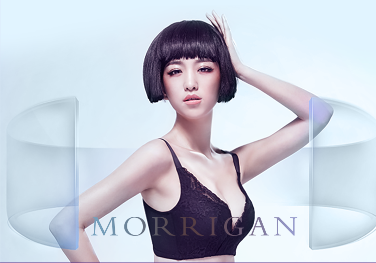

OUR TEAM
我们的团队
- 深圳市摩莉健康智能科技有限公司是一家以智能科技创新为主导，专注于智能内衣研发的高科技服装企业。公司成立于2015年，坐落于深圳市福田区，拥有软硬件研了工程师团队、内衣行业资深专家等共计60余人，涵盖智能健康内衣的设计、研发。生产及销售等环节。
- 公司旗下智能内衣品牌摩莉(英文:MORRGAN)是互联网智能硬件科技与传统内衣的结合，传递智能、舒适、健康的品牌理念，开创乳房穴位震动按摩文胸穿戴体验，解决传统内衣的诸多弊端，实现对内衣产品技术的颠覆，为女性带来"深藏不露"的时刻关爱。
- 摩莉始致力于科学提升女性内衣的实用性与舒适度，深入调研女性用户需求，集合行业内顶尖专家，精耕产品设计。产口更注重用智能科技倡导健康的女性生活哲学，于智能软硬件领域不断突破，取得了卓越成效，在无线充电技术、电池防水防高温处理、马达稳定性方面，稳居行业领先水平。